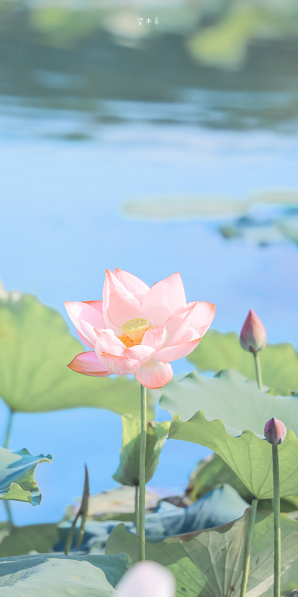

1、花语:荷花的花语是清白、纯洁、坚贞、信仰、忠贞和爱情。出淤泥而不染，濯清涟而不妖，所以很多人都会用它来比喻纯洁的内心，不随波逐流的坚定信念。

2、寓意:荷花有着高洁、吉祥的美好寓意，从古至今深受人们的喜爱，能让我们学习到它们身上纯洁的品质，寓意着万事吉祥、事事如意。
二、荷花的故事和传说
相传在天庭有位叫玉姬的侍女，在王母娘娘身边伺候，有一天，玉姬透过九重天，看见了人间出双入对的男男女女，过着你耕地种田，我织布做衣的日子，心里非常的羡慕，因此便动了凡心，在河神之女的陪伴之下，瞒着王母娘娘偷偷下了凡间，在杭州西湖边过上了凡人的日子。

西湖秀美的风光让玉姬流连忘返，一点都不想回到天庭，但是地上一年天上一天，玉姬私自下凡的事情，终究还是被王母娘娘所知，于是王母便用莲花宝座，将玉姬打入湖底，埋入淤泥中贬其永世不得再上天庭。从此，天庭就少了一位名叫玉姬的侍女，而人间便多了一朵出淤泥而不染的荷花。